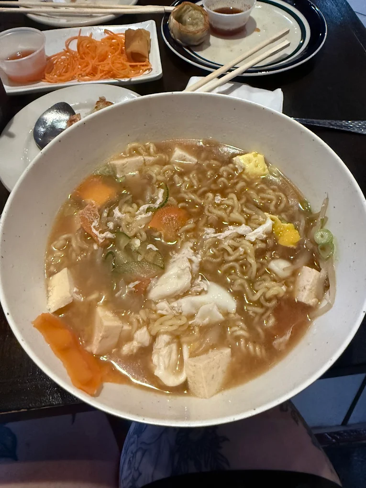
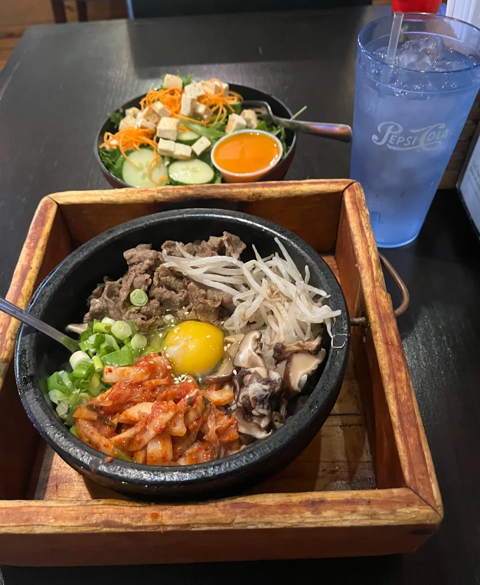
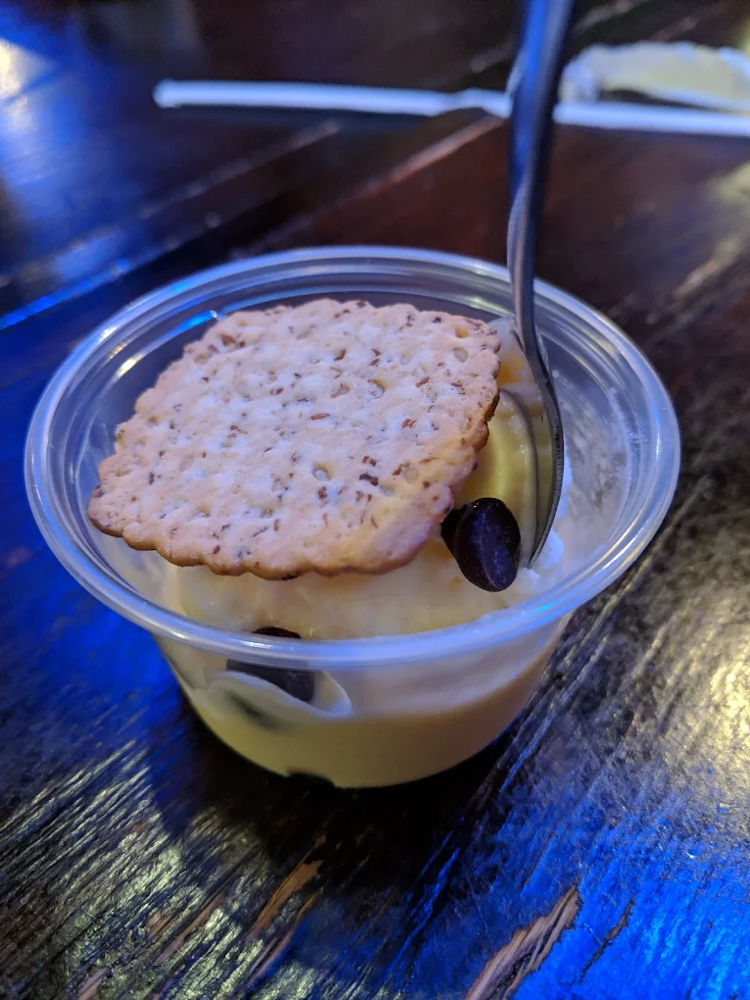
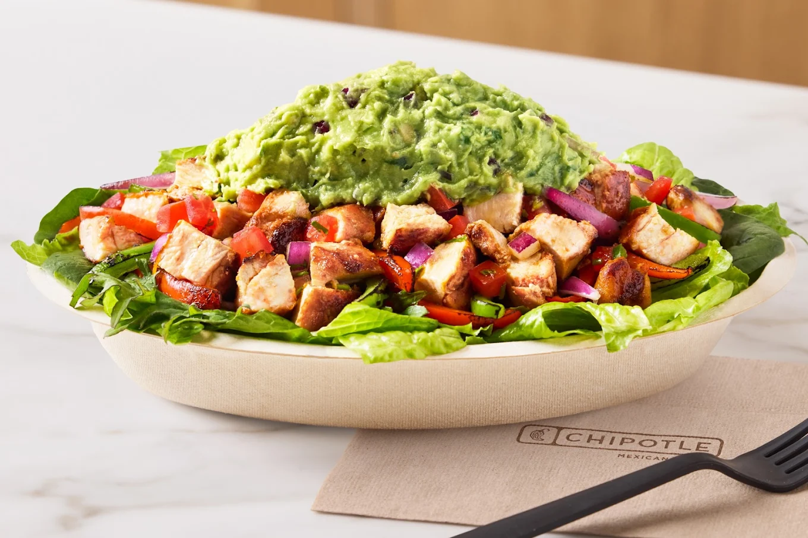
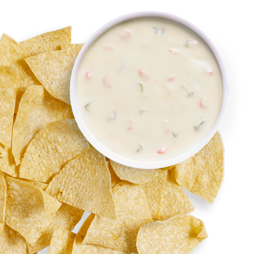
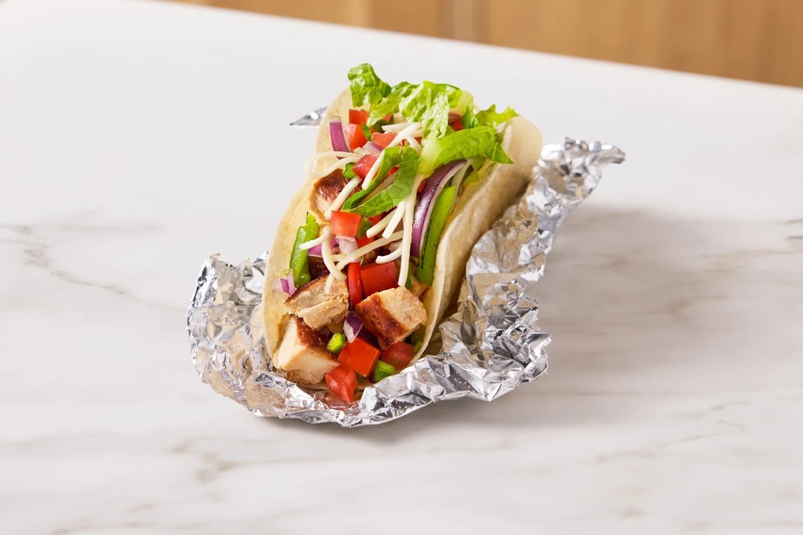
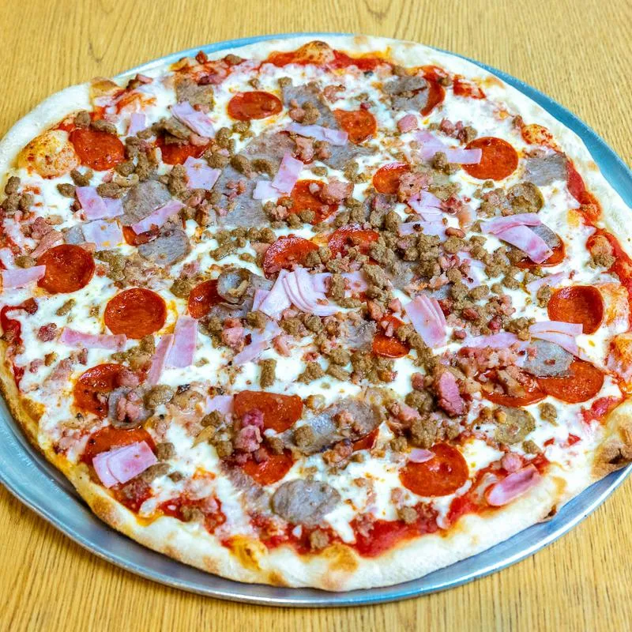
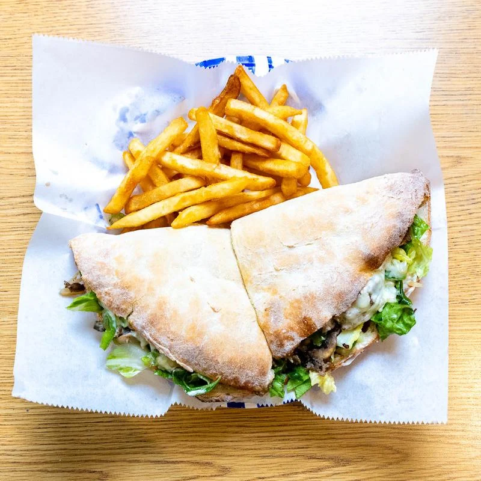
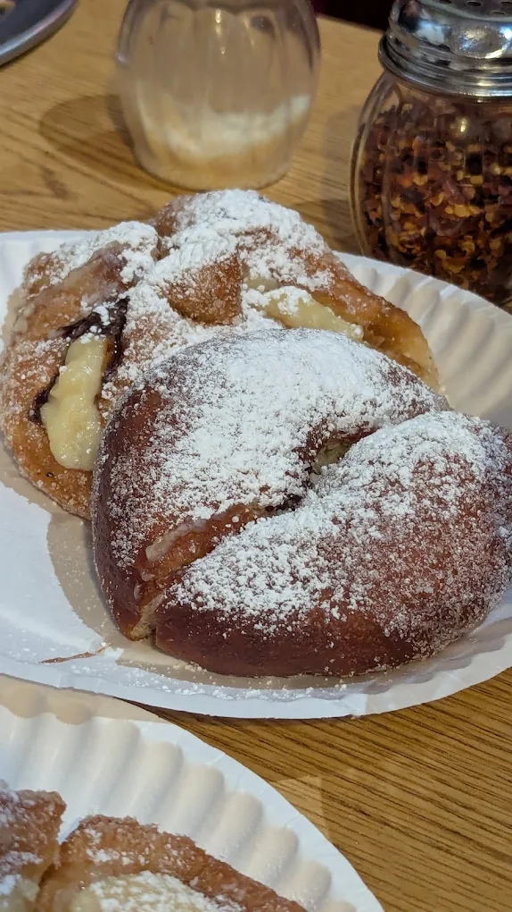

Don
Simple, booth-lined Japanese restaurant specializing in hot entrees like donburi, teriyaki & ramen.
Ramen
UMAI!!! I Love some warm ramen on a cold winter's day
Ishiyaki
Hot rice in a hot bowl! How fancy!!?!
Mochi
My favorite part of every meal dessert!
Chipotle
Chipotle Mexican Grill is a fast casual chain specializing in bowls, tacos, and burritos made to order.
Bowl
A nice hearty bowl filled with all the fixins!
Chips and Queso
You cant go wrong with Chips and Queso!!!!! White cheese and salty chips
Taco
\It may not be a street taco but hey I love it anyway!
Slices By Tony
Hand-tossed Italian slices and fan-favorite pies, made fresh daily with simple ingredients and a neighborhood, college-friendly vibe.
Loaded Pizza
Hot warm loaded pizza.
Sandwhich
YUM! I love a nice sandwhich with fries
Dessert
Holy Cannoli is that fried dough!
Contact
Let me know if you checked out these resturants. Did you like them or hate them? email me at: fakeEmail.@gmail.edu